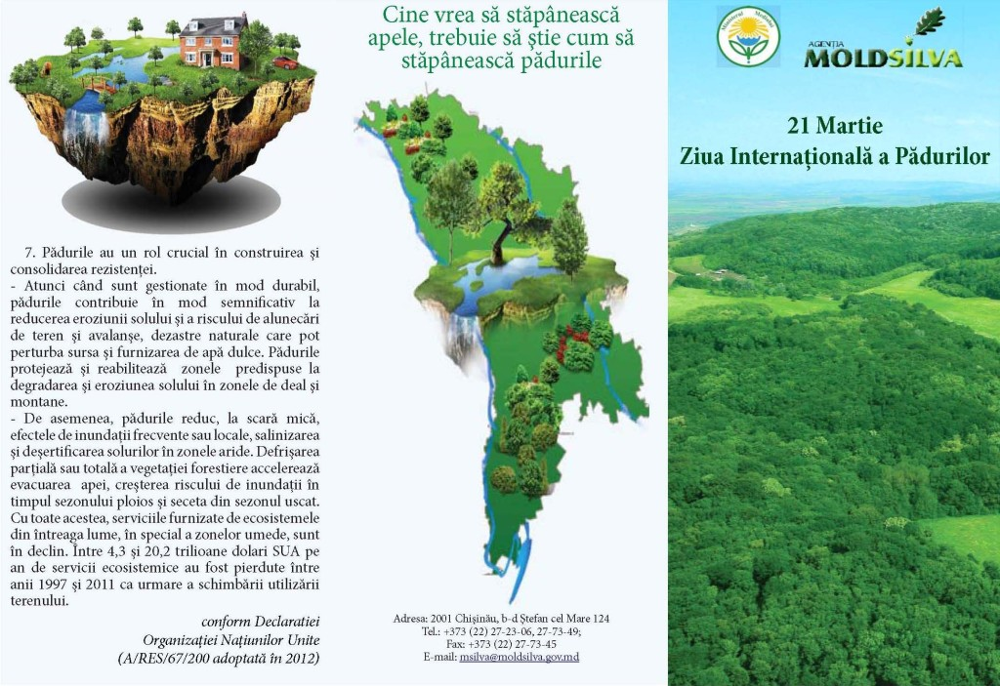

La 21 martie la nivel internațional este marcată „Ziua Internațională a Pădurilor”, declarată printr-o rezoluție a Organizației Națiunilor Unite, care vine cu inițiativa către toate țările lumii să desfășoare mai multe activități de susținere a acestei zile. Pentru anul 2016, aceasta zi poartă un generic deosebit - „Pădurea și apa”, accentuînd problemele apei și importanței pădurilor în menținerea regimului hidrologic și aprovizionarea populației cu apă curată, la care contribuția vegetației forestiere este enormă.
